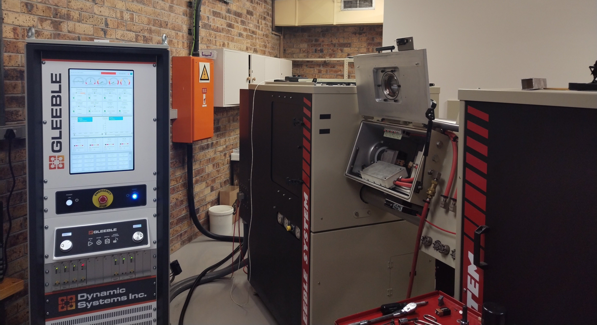

Masters dissertation
Design of an extreme-temperature fracture toughness testing apparatus using induction heating
Overview


If I could describe my Masters dissertation in a sentence, it would be a more efficient and versatile design for conducting high-temperature fracture toughness tests. (In short, these tests measure the resistance of a material to cracks/imperfections, and are conducted by pulling a cracked sample such as the image on the right.) Presently, testing at high temperature requires a furnace which causes two main issues:
- It takes hours to heat up and cool down for a single test.
- It prevents the use of various measurement methods which are needed for accurate tests.
Temperature limitations, oxidation potential, and view obfuscation are other common issues.
Fortunately the CME contains a Gleeble 3800, a machine with efficient induction heating capabilities and a versatile chamber promising to address all the prior issues with conducting these tests. However, it was not designed with any kind of fracture toughness testing capability whatsoever.

My project was to make fracture toughness testing work on the Gleeble at temperatures up to 2,100 °F (1,000 °C) using optical measurement methods. This would end up requiring the following things:
- The physical design of a module to be fit onto the Gleeble. This was the biggest by far.
- Development of a repeatable testing methodology and process for the machine.
- A lot of testing, data analysis and result interpretation.
The following images are of the final functional prototype which even exceeded the temperature goal initially set.